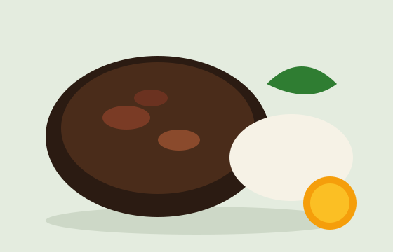

Coxinha de frango
Minha nota: 8
Os pratos que eu mais gosto, com a minha nota e a dos amigos.
Projeto Integrador da disciplina de Desenvolvimento Front-end para Web. Cada prato tem categoria e média, e o catálogo classifica todos eles de Imperdível a Evitar.

Minha nota: 8
Minha nota: 9
Minha nota: 8
Minha nota: 7
Minha nota: 8.5
| Prato | Categoria | Nota |
|---|---|---|
| Coxinha de frango | Entrada | 8 |
| Feijoada completa | Prato principal | 9 |
| Moqueca de peixe | Prato principal | 8 |
| Lasanha à bolonhesa | Prato principal | 7 |
| Pudim de leite | Sobremesa | 8.5 |
Saiba mais sobre a origem da feijoada na Wikipédia.